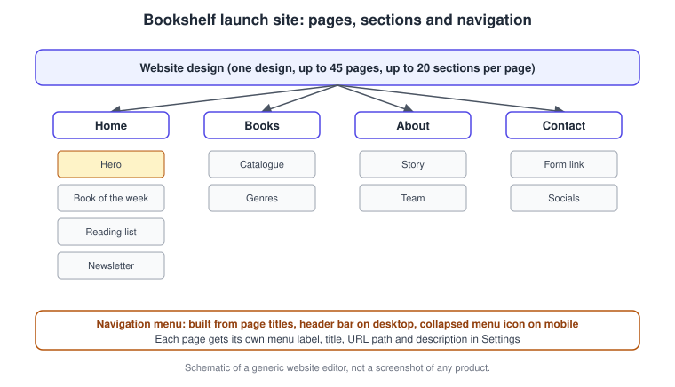
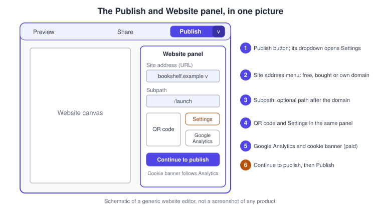
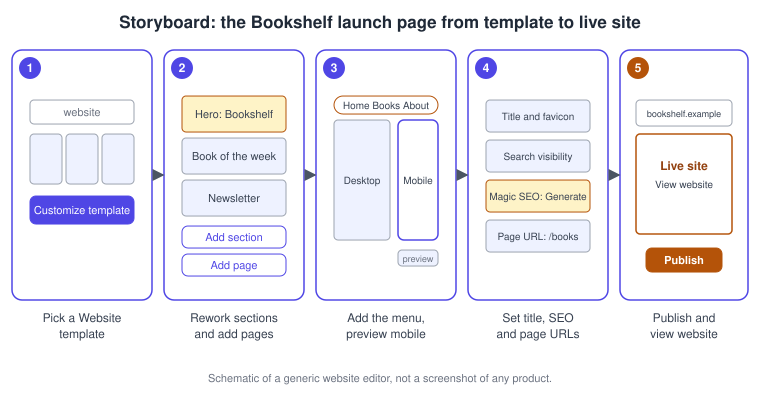
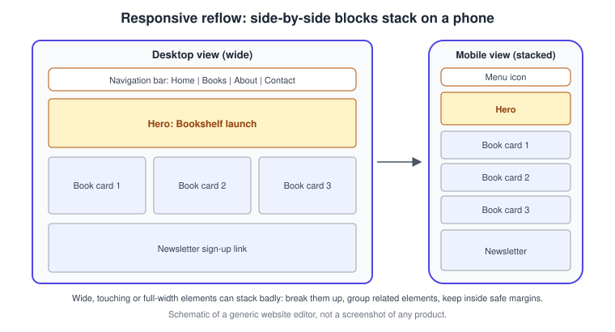
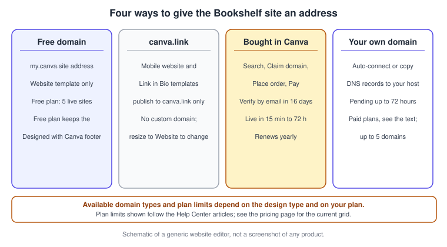

Websites
|
This content was generated with the assistance of AI and should be verified against the official documentation before being relied on in production. |
This page was checked against the official Canva Help Center on 2026-11-07. It covers Canva Websites, the website builder inside the Canva editor (web, desktop app and, for most steps, the mobile apps). Websites appear as a row of the pricing grid on https://www.canva.com/pricing/ and are ticked on every column, Free, Pro, Business and Enterprise; Education and Nonprofits accounts can use them too. The Help Center overview still says that websites are "only" for Free, Pro, Teams and Education, wording that lags behind the grid, so treat the grid as the current statement and check your own account. Limits that depend on your subscription (how many sites, sections and connected domains, the footer, Google Analytics and insights) are listed in the sections below, always as the Help Center words them, and prices are not repeated here; they are published at https://www.canva.com/pricing/. The one AI feature on this page, Magic SEO, is a Premium-tier feature that draws on the AI allowance explained on Plans, Pricing and AI Allowance. Canva Websites is generally available; the conversational Canva AI 2.0 launched as a research preview on 2026-04-16, has no published general-availability date, and is not required for anything here.
The running example is Bookshelf, the book catalogue and reading-list app designed in the Figma sub-section. Its launch campaign needs a one-page launch website with a custom domain, search-friendly metadata and analytics. The page builds that site step by step, after explaining how the builder is organised.
What Canva Websites is, and what it is not
Canva Websites turns a design into a responsive, scrolling site that you publish with one button, with no code. The Help Center lists the kinds of site it is meant for: one-page landing pages, event pages, newsletters, portfolios, classroom hubs and bio link sites. Multi-page sites are also supported, where each page has its own address on the same site.
It is a design-first site builder, not a content management system. There are no collections, no editable database of articles or products, no roles for editors and no templates driven by data. You edit a page visually, then publish a snapshot. When a site needs dynamic content, structured publishing workflows, hosting controls or code export, a CMS or a visual site builder with a CMS is the right choice. This documentation covers one in depth, Webflow, and compares several content management systems on the CMS comparison. A practical rule: use Canva Websites for campaign, event, portfolio and link pages that one or two people maintain in the editor; move to a CMS when content is produced continuously or by many authors.
Canva Code can also publish interactive creations as live websites from a code thread, with its own site address and settings; that route is described on Canva Code. Canva Docs can be published as websites as well, covered on Canva Docs.
The structure of a site
A site is one design. Inside it you work with two levels, pages and sections. A section is a block within a page, added with Add section; a page is added with Add page, and on a published site each page appears as a separate scrollable page. According to the Help Center, a website can have up to 45 pages and up to 20 sections per page while you design. When you publish, the Free plan allows up to 10 sections per page; paid plans (Pro, Business, Enterprise, Nonprofits and Education) publish up to 20. If a page on the Free plan has more than ten sections, Canva asks you either to remove sections or to upgrade before it publishes.

The navigation menu is generated from the pages. On desktop it is a horizontal bar in the page header; on mobile it collapses into a menu icon. Every page can carry its own menu label, page title, URL path and description, which you set in the publish settings (see below).
Where websites live in the editor
Almost everything is reached from the Publish button in the editor’s top bar. It publishes the site directly, and its dropdown arrow opens Settings first. In a design that did not start from a Website template, such as a presentation, you reach the same panel with Share, then Website (on desktop, See all, then Website, if it is not listed). Video designs publish into a video player and all other designs open in presenter view like a slideshow; for a scrolling layout use Magic Resize to convert the design to a website or start from a Website template.

-
The Publish button publishes the website; its dropdown opens Settings.
-
The Site address (URL) menu chooses the domain: a free Canva domain, a purchased domain or your own.
-
The Subpath is the optional path after the domain.
-
The panel also offers a QR code you can share, and Settings.
-
Google Analytics and the cookie banner sit in the same settings and are limited to paid plans.
-
Continue to publish returns to the panel, where Publish makes the site live.
Procedure 1: design the Bookshelf launch site
The goal is a four-section home page and two further pages, built from a Website template.
-
From the Canva homepage select Templates in the side menu, type "website" in the search bar and browse the results.
-
Select a template to preview it, then select Customize this template to open it in the editor. To start without a template, choose Website among the recommended categories and select Create a blank Website.
-
Replace the text, photos and colours with the Bookshelf brand kit (see Brand Kit and Brand Voice): the indigo and amber palette, the logo and the headline "Your shelf, in your pocket".
-
Use the editor side panel tabs to add graphics, photos, videos, charts or embeds. To animate a page, a text or an element, select Animate in the toolbar (see Animation and Transitions).
-
At the bottom of the editor select Add section to add a block to the same page: create "Hero", "Book of the week", "Reading list" and "Newsletter".
-
Select Add page to add the "Books" and "About" pages. Each page appears as its own scrollable page when published.
-
To link between pages, select a text or an element, choose the link icon in the toolbar (open the more menu first if it is hidden), select Pages in this document, pick the page and select Done. A "See all books" button on the home page can point to the "Books" page this way.
-
Select Preview to see the design as visitors will.

Navigation menu
A navigation menu helps visitors move between pages and is optional. There are two ways to add it, and both are described by the Help Center.
-
Press Command + E on macOS to open Quick actions, or the slash key on Windows, type "Navigation menu" and select it; the menu is placed at the top of the design.
-
Or select Publish website, then Settings, and turn Navigation menu on. The menu then appears on your design pages in the editor.
With the menu selected you can change its colours, font, style and size from the toolbar. Edit opens its settings: on the Items tab you can hide a page from the menu or add an extra link, and on the Settings tab you can switch a logo on or off, upload it and give it a link such as the home page. An existing site that uses the older menu switches to the customisable one by turning Navigation menu off and on again in the settings, then publishing.
Responsive behaviour and mobile preview
Canva reflows a website to the screen size by stacking elements vertically, so side-by-side blocks on desktop become a column on a phone. Resize on mobile in the site settings adjusts the design for mobile screens automatically.

To check the result while you design, select the preview icon (on mobile, Preview). The Mobile Preview panel shows a live mobile view and updates as you change text, images, layouts or sections. Close it with the close button in the Website panel. The Help Center calls the preview an approximation, because the published site can differ by device and browser. When a site looks different on mobile, its advice is to:
-
check for overlaps and resize or crop elements so their borders do not touch
-
replace very wide, full-width elements with smaller ones that stack neatly
-
keep important elements inside the safe margins
-
group related elements, then lock the group so they stay together (select them, or hold Shift while selecting, and choose Group in the floating toolbar)
Website settings
Open settings from the dropdown beside Publish, then Settings, or from your account’s Settings, then Web domains, then View next to the site. The Site tab holds settings for the whole site:
| Setting | What it does |
|---|---|
Favicon |
The small icon shown in browser tabs, bookmarks and search results; use a square JPG or PNG, 280 x 280 pixels recommended, up to 25 MB |
Website title |
Shown in browser tabs and search results |
Search engine visibility |
Turn it off to hide the site from Google and other search engines |
Password protection |
Requires visitors to enter a password; search engines cannot index password-protected pages |
Navigation menu |
Adds the menu described above |
Resize on mobile |
Adapts the design to mobile screens automatically |
Social media link preview |
Sets the image and text shown when the site is shared |
The Pages tab customises each page: a Menu label (how the page appears in the menu), a Page title (browser tabs and search results), a Custom URL path such as "about-us", and a Page description of 150 to 160 characters. Leave the path blank for the home page, and give each page unique titles and descriptions; the full address becomes the domain plus the path.
Procedure 2: set the Bookshelf site settings and generate SEO
-
Open the Bookshelf site and select the dropdown beside Publish, then Settings.
-
On the Site tab, upload a square favicon of the Bookshelf logo and enter the website title "Bookshelf: your reading list, organised".
-
Leave Search engine visibility on, leave Password protection off, and turn Resize on mobile and Navigation menu on.
-
Set a social media link preview image, so that the post you share on LinkedIn shows the hero artwork.
-
Open the Pages tab. Give the home page a menu label "Bookshelf", a blank path and a short description. Give the Books page the path "books".
-
Add 1 to 2 sentences of text on every page that is still empty, then select Generate SEO if all fields are empty (Regenerate SEO if one field is already filled). Review the generated titles, descriptions and URL paths and edit them where the wording does not match the brand voice.
-
Select Continue to publish to save.
Magic SEO creates search-friendly titles, descriptions and URL sub-paths for the whole website in one click, using the page content. The Help Center states that it counts toward your AI usage as a premium feature, that it works on all pages at once, that Regenerate SEO replaces every existing title, description and sub-path, even those you wrote by hand, and that there is no undo or version history, so copy anything you want to keep first. It only creates sub-paths for pages whose field is empty, so live links are not overwritten.
Search visibility
Canva also generates a sitemap at the root of the published domain, for example the domain followed by sitemap.xml, redirects the version of the domain that starts with www to the one without it, and uses the design title and the page description as the title and description in search results. The Help Center adds recommendations: add alt text to images, use relevant keywords in the website description, keep each site reasonably small, publish on a custom domain with no subpath, share the address without www, and keep password protection off. Search engines can take weeks to index a new site. Google Search Console cannot be used on a free Canva domain, which is one more reason to use a custom domain when search matters.
Publishing and domains
Three kinds of address exist for a Website design.

-
A free Canva domain on
my.canva.site, for testing and personal projects. The Help Center says a Free account can publish five sites there and a Pro account an unlimited number; Education accounts can publish unlimited sites on the free domain. Free Canva domains previously used by another brand cannot be reused. The name of a free domain can be changed from the account settings (the Help Center says only a team admin can change a team’s free domain name); then republish the sites. -
A purchased domain: Canva sells domains through a reseller arrangement with Tucows, and Tucows' refund policies apply. Purchases are for one year and renew automatically; turning off auto-renewal still lets you use the domain until the paid period ends. All users can publish unlimited sites to a domain purchased in Canva. Domains cannot be bought in the iOS and Android apps, only in a browser, and on teams only administrators can buy them.
-
Your own domain, bought elsewhere, connected through DNS. The Help Center lists it for paid plans: Pro, Business, Teams and Education. It allows up to five connected domains at a time, and unlimited sites on each one; Education accounts connect one at a time. Teams also let only administrators and owners connect a domain.
Templates for a mobile website or Link in Bio publish to a canva.link address only, with no choice of domain. To use a custom or free .canva.site domain, resize the design to a Website template or start from one.
Procedure 3: publish the Bookshelf launch page on a free domain
-
In the editor select Publish website.
-
In the Website panel, open the Site address (URL) dropdown and choose the free domain. Update the Subpath, for example "launch", if needed.
-
Select Settings. Check Resize on mobile and Navigation menu, review the title and favicon, password protection, search engine visibility and the social media link preview, then select Continue to publish.
-
Back in the panel, change the Site address (URL) or Subpath if you want, then select Publish.
-
When the success message appears, select View website to see the live site. The QR code in the panel can go on the print flyer; see Print and Mockups.
You can keep editing after the site is live. Republish it to reflect the changes. If you are on the Free plan, a "Designed with Canva" footer appears at the bottom of every published website, on a free domain and on your own domain alike. It includes Canva’s privacy policy and cannot be removed on a Free plan; paid plans are not required to show it, and websites that were already on a custom domain show a notice about the change when you next open the Publish menu. On Education accounts, a teacher approves a website before a student can publish it.
Procedure 4: buy a domain for Bookshelf
-
In the editor select Publish website, then Buy a new domain. (You can also check names beforehand in Canva’s domain search page and select Claim domain.)
-
Search for the name you want and select Claim domain next to it.
-
Enter your contact details and select Place order.
-
Optionally edit the site settings, such as the URL slug, site description and password protection, then select Continue.
-
Choose a payment method, enter the details and select Pay and verify.
-
Open the verification email Canva sends the first time you buy a domain under that address. Verify within 16 days, otherwise the domain is suspended and the site stops working; the site is then available within 15 minutes to 72 hours. Up to six emails are sent over those 16 days; check the spam folder.
Canva sells domains in many extensions, including .com, .net, .org, .design, .shop, .site and .online; prices vary by extension and are billed annually, so check the checkout screen rather than a book. Canva gives purchased domains Whois protection, which hides your contact details from the public Whois registry.
Procedure 5: connect a domain you already own
-
In the editor select Publish website, then the Get a new domain link.
-
In the Use a custom domain window choose Bring your own domain, then Continue.
-
Enter your domain without "www". If you already have a site on the domain, use a subdomain, for example one with a "launch" prefix, so the main site is untouched.
-
If your provider supports automatic connection, select Log in and auto connect, then Continue, log in with your DNS provider to grant a one-time permission, and select Done.
-
Otherwise copy each DNS record Canva shows into your domain host’s DNS settings and select Continue in Canva. The Help Center example edits the A record for the root name with the value Canva gives you and leaves the TTL at its default; if the host reports "Missing or invalid data", remove any A, CNAME or TXT records Canva did not provide.
-
Optionally review the site settings, then select Publish. The site goes live after the domain is verified.
Verification waits for DNS propagation, which can take up to 72 hours; you receive an email when the records are connected or need rechecking. Check the status under your account’s Settings, then Web domains, where the current value must match the expected value. Brand admins can set a default domain there, which is preselected when a team member publishes a new site; members can still pick another. If you point your domain at Cloudflare, the Help Center also lists turning off its proxy for the record as a fix when verification stays pending.
Managing, moving and removing a site
-
Domains are managed from your profile, then Settings, then Web domains. For a domain managed by Canva you can edit the contact details, turn auto-renew off, and see the websites published on it. For a third-party domain you can refresh the DNS status or remove it. For teams, only administrators and owners can manage domains.
-
Nameservers and transfers: for domains bought in Canva, the advanced settings let you change nameservers (the Canva site stops working until you configure DNS yourself), edit DNS records, or unlock the domain to transfer it. A transfer is possible only after 60 days from purchase, is not reversible and can take up to a week.
-
Unpublish from the editor with the arrow beside Publish Changes, then Settings, then Unpublish, or from Web domains with the actions button next to the design. Unpublishing unlinks the site from the domain, so it can no longer be visited. If you only want to limit who can see it, use password protection. Deleting a design that is live asks for confirmation and unpublishes it.
Insights, Google Analytics and the cookie banner
Canva offers two kinds of measurement. Website insights come from the Analytics icon in the menu of a published website design. They show visits (with a per-page selector), country views, device views, traffic sources and, on the Engagements tab, which links visitors clicked. Canva websites follow Canva’s privacy policy and do not use cookies or IP tracking, so unique visits cannot be counted exactly and the same visitor may add several visits. The Help Center lists insights for Pro, Teams and Education users with edit access to the design, and for Education accounts the site needs teacher approval first. Because that article predates the Business plan name, check your plan if the icon is missing.
Google Analytics connects your own Analytics property. The Help Center lists it, with the cookie banner, for Pro, Business, Enterprise and Teams plans, and neither is available for Canva websites in China. You need a Measurement ID of the form G-XXXXXXXXXX, a custom domain to publish to, and a privacy or cookie policy page on your site. Enter the ID under Settings, then Google Analytics, and publish. Data can take 24 to 48 hours to appear in your Analytics account. Connecting it automatically turns on a cookie consent banner. You can choose the banner position (top or bottom) and colour (black or white), but not its text. Visitors can accept or decline Analytics cookies; a visitor’s choice is stored on their device for 12 months, and a floating cookie settings button, on by default, lets them withdraw consent. The banner appears only on the published site, not in the editor or preview. The Help Center is explicit that the banner is a tool, not a complete compliance solution: you remain responsible for ePrivacy, GDPR, CCPA and the other laws that apply to your visitors, and a separate consent tool is needed when you must keep consent records.
Procedure 6: measure the Bookshelf launch
-
Publish the site on the purchased or connected custom domain (Procedures 4 and 5), because the Analytics connection requires one.
-
Publish a privacy policy page on the site that explains how Analytics collects, uses and stores visitor data, and link it in the footer.
-
Create a Google Analytics property outside Canva and copy its Measurement ID. Keep it in a configuration note or password manager, never in a shared design.
-
Open the dropdown beside Publish, then Settings, then Google Analytics, enter the ID and choose the cookie banner’s position and colour.
-
Select Publish changes, then open the site as a visitor, accept the banner and check the Analytics real-time view after the first sessions.
-
After the first week, open the Analytics panel in the Canva editor, check the per-page visits, traffic sources and clicks on the "Reading list" button, and compare them with what the Content Planner schedule produced (see Social Media and the Content Planner and Canva Grow and Marketing Analytics).
Link in bio
Templates for a mobile website or Link in Bio are built for a single list of links, for example in a social profile. They publish only to a canva.link address and cannot take a free .canva.site domain, a purchased domain or your own, because custom domains are available for Website designs only. To get a custom domain, resize the design to a Website template or start a new design from one. For Bookshelf, a link in bio page lists the app store link, the reading-list sign-up and the launch site, and is shared from the Instagram profile.
Choosing between Canva Websites and a CMS
| Need | Canva Websites | A CMS such as Webflow |
|---|---|---|
One-page launch, event or link page |
Designed and published in minutes, with the Canva brand kit |
More setup than needed |
Content produced by many authors |
No collections or roles; one design file |
Structured content models and workflows, see Webflow |
Search, performance and hosting control |
Basic settings, Magic SEO, sitemap, a Free-plan footer |
Fine-grained control; compare options on the CMS comparison |
Code export and portability |
Not offered |
Varies by platform |
Dynamic data |
Embeds and Canva Code |
Collections and integrations |
The Bookshelf launch site lives in Canva because it is a campaign page that the marketing designer edits. The product catalogue itself belongs in the application built in the other sections of this documentation.
Where older guides are outdated
| Older statement | Current behaviour | Date |
|---|---|---|
Publishing a website is a Share, then Publish Website, then Public link flow |
A Publish button opens the Website panel with the site address, subpath, QR code and settings; Share, then Website remains the route for non-website designs |
Checked 2026-11-07 |
Three steps: pick a template, customise it, publish to a free or custom domain |
Also pages and sections, a customisable navigation menu, a live mobile preview, per-page title, path and description, Magic SEO, Google Analytics with a cookie banner, domain verification and a default team domain |
Checked 2026-11-07 |
Plans are Free, Pro and Teams |
Business replaced Teams for new customers; the pricing grid ticks websites on Free, Pro, Business and Enterprise, while some Help Center articles still name Teams and Education |
2025-10-30 |
A website can always be published without branding |
A "Designed with Canva" footer appears on the Free plan and cannot be removed there |
Checked 2026-11-07 |
References
-
Canva Help Center: Canva Websites overview and getting started guide
-
Canva Help Center: Design websites in Canva using templates or from scratch
-
Canva Help Center: Magic SEO: Automatically generate SEO for your website
-
Canva Help Center: Optimize the searchability of your Canva website
-
Canva Help Center: Understand your Canva website analytics and insights
-
Canva Help Center: Set up Google Analytics for your Canva website
-
Canva Help Center: Add a cookie consent banner to your Canva website